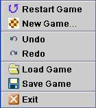

|
Back to Help Contents
The Game Menu

The following options are available from the Game menu:
- Restart Game. Starts a new game, with the current settings
- New Game. Opens the New Game dialog.
- Undo. Undo the last taken move.
- Redo. Performs the last "Undone" move.
- Load Game. Loads a saved game.
- Save Game. Saves the current game.
- Exit.
Back to Help Contents
|